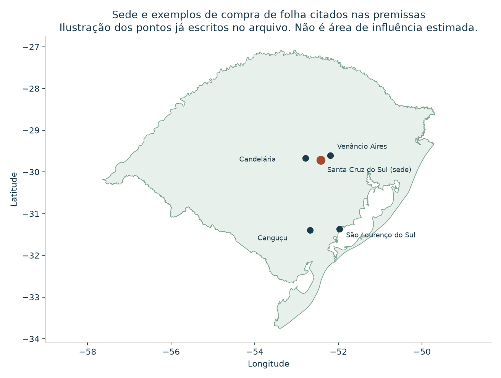

Relatório executivo técnico para o Governo do Rio Grande do Sul, o Governo Federal e as prefeituras do COREDE Vale do Rio Pardo.
Outubro de 2026. Operação em ano cheio: 2037. Preços em R$ constantes de 2025. Matriz: MIP-RS 2019, DEE/SPGG e UFRJ, 117 produtos × 52 atividades.
O fluxo da planta segue as premissas de 18/10/2026 (revisão 4). Um rascunho posterior, feito por outra ferramenta sobre o mesmo projeto, repete esses fluxos e acrescenta obra, lista municipal e multiplicadores próprios. Esta conta usa a revisão 4 para a planta e calcula a cadeia na MIP-RS. Onde os dois textos divergem, a diferença está registrada na seção 9 e nos limites.
O objeto medido é a operação, em 2037, de uma planta de produtos de nicotina sem fumaça na fábrica já existente da Philip Morris Brasil em Santa Cruz do Sul. Os produtos são sticks de tabaco aquecido (folha reconstituída), e-líquido com nicotina de folha brasileira e sachês só de exportação. O total calculado é estadual. O recorte de apresentação é o COREDE Vale do Rio Pardo.
Três números de manchete, cenário base:
| Manchete | 2037, R$ de 2025 |
|---|---|
| Emprego direto na planta | 4,06 mil ocupações |
| Valor adicionado direto da planta | R$ 7,83 bilhões |
| Valor adicionado da cadeia no RS | R$ 940 milhões |
O conteúdo local de 20% sobre o custo dos insumos que não são folha é hipótese de trabalho desta rodada, adotada para fechar a conta. Esse percentual descreve a parcela comprada no Rio Grande do Sul. A nota fiscal dessa compra não está no arquivo. A faixa da mesma hipótese vai de R$ 470 milhões (10%) a R$ 1,64 bilhão (35%) de valor adicionado na cadeia.
A adicionalidade de 100% é premissa de capa. Sob essa premissa, o efeito bruto e o efeito líquido coincidem: a operação entra por inteiro como atividade nova, e a linha de cigarros que já existe na fábrica permanece fora do choque.
Com a camada de consumo das famílias, o valor adicionado no RS chega a R$ 9,2 bilhões e as ocupações a cerca de 17,5 mil. Dessas ocupações, 4,06 mil são a premissa da planta. As demais aplicam o coeficiente de trabalho publicado na própria família da matriz, na agregação de 16 atividades.
A planta fica em Santa Cruz do Sul, na unidade já existente da Philip Morris Brasil, classificada na CNAE 12.20-4 (fabricação de produtos do fumo). O cenário é de mercado nacional regulado, com 9,9 milhões de usuários no canal legal em 2037, mais exportação para onze países da América Latina. A premissa de demanda trata o mercado atual desses produtos como abastecido pelo canal ilegal, sem fábrica, sem folha brasileira e sem tributo.
Três linhas, em maturidade:
| Linha | Destino em 2037 | Volume |
|---|---|---|
| E-líquido (pod de 11,36 mL; o custo inclui o dispositivo) | Mercado interno e exportação | 3,074 bilhões de mL |
| Sticks de tabaco aquecido | Mercado interno e exportação | 12,338 bilhões de sticks |
| Sachês de nicotina oral | Só exportação | 0,138 bilhão de unidades |
A receita ex-fábrica a preço básico, em R$ de 2025, é de R$ 15,83 bilhões: R$ 12,56 bilhões no mercado interno e R$ 3,27 bilhões FOB na exportação. Essa receita é o teto contábil da planta. Ela descreve o tamanho da operação. Ela não é o vetor que entra na matriz.
A fábrica compra a folha ao produtor, a preço de porteira. O beneficiamento (CNAE 12.10-7) não é uma etapa separada nesta rodada. Em 2037 a compra no Sul é de 6,51 mil toneladas (R$ 114 milhões). A parcela gaúcha, 46% pela proporção da PAM, é de 3,007 mil toneladas e R$ 52,8 milhões. Pela regra de 5,5 toneladas por família, essa compra no RS equivale a 547 famílias. Família-equivalente é escala de compra. Ela fica ao lado das ocupações e não entra na soma de empregos.
A capacidade de cigarros já instalada (cerca de 15 bilhões de cigarros por ano e cerca de 1,6 mil colaboradores) permanece fora do cenário. A obra, o terreno, o capital de giro, a depreciação e a despesa financeira também ficam fora. Esta rodada é o ano cheio de operação.
A revisão 4 traz a ficha sintética por unidade. Ela é a origem do valor adicionado, das ocupações e da folha. É proxy, não medição de chão de fábrica.
| E-líquido | Stick | Sachê | |
|---|---|---|---|
| Volume em 2037 | 3,074 bi mL | 12,338 bi sticks | 0,138 bi sachês |
| Dos quais exportação | 0,956 bi mL | 0,918 bi sticks | 100% |
| Insumo por unidade | R$ 2,14 / mL | R$ 0,111 / stick | R$ 0,268 / sachê |
| Folha por unidade | 0,90 g / mL | 0,30 g / stick | 0,27 g / sachê |
| Preço da folha | R$ 15 mil / t | R$ 19,5 mil / t | R$ 15 mil / t |
| Ocupações por milhão de unidades | 0,92 | 0,097 | 0,20 |
| Remuneração por mil unidades | R$ 138 | R$ 14,57 | R$ 30 |
A soma das ocupações por linha reproduz as 4,06 mil. O e-líquido concentra o custo de insumos, porque o dispositivo entra no BOM do pod. Por isso a hipótese de composição trata metade desse custo como dispositivo, com conteúdo local baixo (10%), e deixa o restante do bolo de 20% em químicos e embalagem.
O preço de varejo interno que calibra a meta de R$ 13,7 bilhões de tributo é de cerca de R$ 9,73 por mL no e-líquido (R$ 110 por pod) e R$ 0,97 por stick (maço de 20 a R$ 19,45). O preço ex-fábrica interno fica em cerca de R$ 3,99 por mL e R$ 0,36 por stick. O FOB de exportação usa o preço de referência, sem o fator de calibração: R$ 3,075 por mL, R$ 0,278 por stick e R$ 0,575 por sachê. A diferença explica por que o insumo pesa mais na receita externa do que na interna.
O arquivo traz a trajetória direta da fábrica. Esta rodada multiplica apenas o ano cheio de 2037. A rampa abaixo não passa pela matriz. Ela mostra que 2037 é maturidade, e que 2028 é outra escala.
| Indicador direto | 2028 | 2032 | 2037 |
|---|---|---|---|
| Receita ex-fábrica | R$ 4,70 bi | R$ 10,68 bi | R$ 15,83 bi |
| Valor adicionado da planta | R$ 2,39 bi | R$ 5,07 bi | R$ 7,83 bi |
| Ocupações na planta | 1,19 mil | 2,81 mil | 4,06 mil |
| Remunerações | R$ 178 mi | R$ 421 mi | R$ 609 mi |
| Folha comprada no RS | R$ 16 mi | R$ 35 mi | R$ 53 mi |
A soma de ocupações-ano de 2028 a 2037 no arquivo (28,2 mil) é a soma de dez estoques anuais. Ela não é um quadro de 28 mil postos. A manchete de emprego permanece o estoque de 2037.
Os valores abaixo são os da revisão 4, em R$ de 2025, para 2037. Valor adicionado, ocupações e remunerações da planta são proxy das fichas v6, aceitos nesta rodada. Eles substituem, até a empresa abrir o quadro real, o que seria um contracheque auditado.
| Item | Com exportação | Só mercado interno | Papel na conta |
|---|---|---|---|
| Receita ex-fábrica, preço básico | R$ 15,83 bi | R$ 12,56 bi | Teto contábil. Fica fora do vetor de choque |
| Insumos (BOM) | R$ 8,00 bi | R$ 5,81 bi | Base das compras. R$ 2,19 bi são da exportação |
| Valor adicionado direto | R$ 7,83 bi | R$ 6,75 bi | Gaveta direta, uma vez. O interno é receita interna menos insumos internos |
| Remunerações diretas | R$ 609 mi | R$ 459 mi | R$ 150 mil por ocupação-ano, com encargos. O interno acompanha as 3,06 mil ocupações |
| Ocupações diretas | 4,06 mil | 3,06 mil | Estoque de 2037. A exportação responde por 1,00 mil |
| Folha no Sul | 6,51 mil t; R$ 114 mi | cerca de 5,33 mil t | Preço de porteira: R$ 19.500/t na classe reconstituída e R$ 15.000/t na classe nicotina |
| Folha no RS | 3,007 mil t; R$ 52,8 mi | 2,465 mil t; R$ 44 mi | 46% do Sul. Margem de comércio zero |
| Insumos que não são folha | R$ 7,89 bi | R$ 5,71 bi | 8,00 − 0,114 no cenário completo |
| Conteúdo local desses insumos | 20% (faixa 10–35%) | 20% sobre o interno | Hipótese de trabalho |
| Adicionalidade | 100% | 100% | Premissa de capa. Bruto = líquido só sob ela |
| CAPEX | fora | fora | Inclusive o anúncio de referência e o lote de R$ 100 milhões citado no plano |
A separação interno/exportação de receita, insumos e ocupações está no arquivo. O valor adicionado interno segue essa separação: R$ 12,56 bi − R$ 5,81 bi = R$ 6,75 bi. A remuneração não vem separada; como a ficha usa R$ 150 mil por ocupação, a parcela interna é 3,06 mil × R$ 150 mil = R$ 459 milhões. A folha interna, em valor, usa o peso das fichas (sticks mais caros e mais voltados ao mercado interno): 83,5% do valor da folha. A tonelagem interna usa o peso físico: 82,0% das toneladas, daí as 2,465 mil toneladas no RS.
Cargas tributárias de memória do cenário, também da revisão 4: 39% do preço de varejo no vape e no sachê e 51% no tabaco aquecido. A meta de tributos sobre o consumo no Brasil em 2037 é R$ 13,7 bilhões. A parcela do consumo no RS é cerca de 6,8%, o que dá R$ 0,93 bilhão de tributos sobre o consumo local, dos quais cerca de R$ 0,48 bilhão estaduais e municipais. O IRPJ/CSLL da planta, pela regra do arquivo (34% sobre 50% do excedente), é R$ 1,23 bilhão, federal. O incentivo não foi informado.
A conta tem três gavetas.
Gaveta 1, efeito direto. Valor adicionado, ocupações e remunerações da própria planta, contados uma vez, com os números da tabela acima. O coeficiente médio da atividade “fabricação de produtos do fumo” da matriz de 2019 não é aplicado à receita nova.
Gaveta 2, cadeia. Só a compra feita no Rio Grande do Sul, a preço básico, vira choque nos setores fornecedores. A matriz propaga esse choque.
Gaveta 3, vazamento. A compra feita fora do RS, no resto do Brasil ou no exterior, é registrada e não é multiplicada.
A obra fica de fora. Terreno, capital de giro, depreciação e despesa financeira não são consumo intermediário e não entram no choque.
A referência é a MIP-RS 2019, construída pelo DEE/SPGG e pela UFRJ no projeto MAEP, no nível mais desagregado publicado: 117 produtos e 52 atividades. A planilha oficial foi baixada de dee.rs.gov.br/matriz-insumo-produto (arquivo de 11/09/2024, tabela 117×52, versão 2). A Tabela de Recursos e Usos do mesmo projeto, no mesmo endereço, fornece remuneração, valor adicionado, produção e ocupações na agregação de 16 atividades.
A matriz de coeficientes técnicos intersetoriais locais é a tabela 13 (atividades × atividades). A inversa de Leontief foi calculada nesta rodada: L = (I − A)⁻¹.
O maior desvio entre essa inversa e a tabela 14, já publicada na planilha, é da ordem de 10⁻¹⁵. O produto da matriz de participação setorial (tabela 12) pela matriz de coeficientes produto × atividade (tabela 9) reproduz a tabela 13 com desvio da mesma ordem. A produção das 52 atividades, somada nos 16 grupos, reproduz o valor da produção da TRU em cada grupo. A conta é Leontief da matriz oficial, com a inversa recalculada e conferida.
O choque nasce em produtos, a preço básico. A participação de cada atividade na produção de cada produto (tabela 12) converte o choque de produto em choque de atividade. A produção da cadeia é x = L f, com f = D g.
| Compra no RS em 2037 | Valor | Produto da MIP | Natureza |
|---|---|---|---|
| Folha de tabaco | R$ 52,8 mi | PR004, outros produtos da lavoura temporária | Dado da revisão 4. Porteira, margem de comércio zero |
| Dispositivo do e-líquido | R$ 329 mi | PR066, material eletrônico e equipamentos de comunicações | Hipótese de composição |
| Químicos | R$ 535 mi | PR051, produtos químicos diversos | Hipótese de composição |
| Embalagem e papel | R$ 713 mi | PR036, papel, papelão e embalagens | Hipótese de composição |
| Compra no RS | R$ 1,63 bi | ||
| Vazamento (não multiplicado) | R$ 6,37 bi | Resto do BOM de R$ 8,00 bi |
A regra da composição, rotulada como hipótese, é a seguinte. O dispositivo vale 50% do custo do e-líquido e tem conteúdo local de 10%. Isso fixa os R$ 329 milhões. O bolo autorizado de conteúdo local é 20% de R$ 7,89 bilhões, isto é, R$ 1,58 bilhão de insumos não agrícolas. O que falta para completar esse bolo, R$ 1,25 bilhão, reparte-se entre químicos e embalagem/papel nos pesos 30 e 40. Energia não tem fatura no arquivo; ela permanece dentro do percentual único de 20%, sem uma conta própria. A atividade de fabricação de produtos do fumo (AT09) recebe choque direto zero. A produção que a cadeia gera nessa atividade é de R$ 0,1 milhão, residual de encadeamento.
A matriz está em R$ correntes de 2019. O projeto está em R$ de 2025. O fator usa o número-índice do IPCA (IBGE, SIDRA tabela 1737): 5.320,25 em dezembro de 2019 e 7.403,29 em dezembro de 2025.
φ = 5.320,25 / 7.403,29 = 0,7186
fluxo de 2019 = fluxo de 2025 × φ. Resultado de 2025 = resultado de 2019 / φ.
A folha de R$ 52,8 milhões entra na matriz como R$ 38,0 milhões de 2019. O valor adicionado que a matriz devolve é trazido de volta a 2025 pela divisão pelo mesmo fator. Ocupação não se deflaciona: o coeficiente é “ocupações por R$ milhão de produção de 2019”, aplicado à produção já expressa em R$ de 2019.
O valor adicionado de cada atividade é o da própria MIP: produção a preço básico menos consumo intermediário a preço de consumidor. Esse coeficiente, atividade a atividade, multiplica a produção gerada por L.
Remuneração e ocupação indiretas usam a TRU de 16 atividades do mesmo projeto, porque a planilha 117×52 não publica esses vetores por atividade. Cada atividade herda o coeficiente do seu grupo (remuneração por real de produção; ocupações por R$ milhão de 2019). Dentro da indústria de transformação, papel, químico e eletrônico usam a média de toda a transformação gaúcha de 2019. Essa ponte está nomeada em cada tabela de emprego.
Sessenta por cento da massa salarial gerada no RS (direta + indireta) vira consumo das famílias. O perfil é o consumo das famílias da tabela 3 da MIP, produção gaúcha a preço básico, com as parcelas positivas renormalizadas. A massa negativa cortada foi nula. Esse consumo entra de novo em L, uma rodada. A manchete para aqui.
A rodada devolve R$ 0,18 de salário novo por real de consumo. A série fechada, se essa realimentação fosse repetida até o fim, multiplicaria o valor adicionado induzido por 1,22. A diferença cabe numa nota: cerca de R$ 100 milhões a mais. A manchete permanece a da rodada única.
O Tipo I deste estudo é direto mais cadeia, sem induzido. O Tipo II soma a rodada de consumo. O bloco II do contratante também é um Tipo I, de outra matriz. Os dois Tipos I se comparam. Eles não se somam, e o Tipo II não se soma ao bloco II.
A ponte de emprego usa estes coeficientes da TRU de 2019, em ocupações por R$ milhão de produção daquele ano e em remuneração por real de produção. São os grupos que mais pesam nesta conta.
| Grupo da TRU | Ocupações por R$ milhão de 2019 | Remuneração por real de produção |
|---|---|---|
| Agropecuária | 20,3 | 0,07 |
| Indústria de transformação | 2,8 | 0,12 |
| Comércio | 12,2 | 0,30 |
| Transporte, armazenagem e correio | 7,2 | 0,20 |
| Atividades profissionais e administrativas | 10,9 | 0,27 |
| Alojamento e alimentação | 12,5 | 0,23 |
| Educação e saúde privadas | 10,0 | 0,32 |
A transformação, que recebe papel, químico e eletrônico, é pouco intensiva em trabalho por real. O comércio e a agropecuária são intensivos. Por isso a cadeia, com R$ 2,60 bilhões de produção em R$ de 2025, lê cerca de 8,3 mil ocupações: a maior parte do valor está na indústria, e uma parte relevante das ocupações está no comércio e na agricultura que essa indústria puxa.
Um exemplo fecha a régua. A folha de R$ 52,8 milhões de 2025 entra como R$ 38 milhões de 2019 no produto de lavoura temporária. A atividade agrícola produz cerca de R$ 58 milhões de 2025 ao longo da cadeia (a compra e um encadeamento curto). Aplicada a média de 20,3 ocupações por R$ milhão de 2019, essa produção agrícola lê cerca de 800 ocupações. As 547 famílias-equivalentes continuam sendo a escala da tonelagem, em outra régua.
Cenário base: exportação incluída, conteúdo local de 20% nos insumos não agrícolas, uma rodada de consumo. R$ de 2025.
| Gaveta | Valor adicionado | Remunerações | Ocupações | Produção |
|---|---|---|---|---|
| Direto, planta | R$ 7.830 mi | R$ 609 mi | 4.060 | R$ 15.830 mi (receita) |
| Cadeia, compras no RS | R$ 938 mi | R$ 369 mi | 8.322 | R$ 2.597 mi |
| Induzido, uma rodada | R$ 455 mi | R$ 177 mi | 5.160 | R$ 876 mi |
| Total no RS (Tipo II) | R$ 9.223 mi | R$ 1.155 mi | 17.542 | |
| Total sem induzido (Tipo I) | R$ 8.768 mi | R$ 978 mi | 12.382 |
A leitura de decisão arredonda a cadeia para R$ 940 milhões, o induzido para R$ 460 milhões e o total para R$ 9,2 bilhões. As ocupações de cadeia e de consumo ficam em cerca de 8,3 mil e cerca de 5,2 mil. A tabela guarda o milhão do modelo para a soma fechar. A hipótese de 20% move a cadeia entre R$ 474 milhões e R$ 1,64 bilhão, faixa bem mais larga do que o arredondamento.
O R$ 940 milhões da cadeia estão ao lado da frase da hipótese: esse valor supõe que 20% do custo não agrícola seja comprado no RS. É hipótese de trabalho, não nota fiscal.
Cada real comprado no RS gera R$ 1,59 de produção gaúcha (o próprio fornecimento mais os fornecedores dos fornecedores) e R$ 0,58 de valor adicionado. A compra multiplicada é de R$ 1,63 bilhão. Os outros R$ 6,37 bilhões de insumos saem do estado e param na gaveta de vazamento.
Oito atividades concentram cerca de R$ 780 milhões dos R$ 938 milhões de valor adicionado da cadeia. O restante se espalha em atividades menores.
| Atividade | Valor adicionado da cadeia | Produção da cadeia |
|---|---|---|
| Celulose, papel e embalagens | R$ 342 mi | R$ 773 mi |
| Outros produtos químicos | R$ 118 mi | R$ 560 mi |
| Equipamentos de informática, eletrônicos e ópticos | R$ 96 mi | R$ 378 mi |
| Comércio por atacado e a varejo | R$ 73 mi | R$ 124 mi |
| Serviços profissionais, científicos e técnicos | R$ 46 mi | R$ 72 mi |
| Transporte terrestre | R$ 38 mi | R$ 106 mi |
| Agricultura | R$ 34 mi | R$ 58 mi |
| Intermediação financeira e seguros | R$ 33 mi | R$ 51 mi |
Papel, químico e eletrônico aparecem na frente porque são os três endereços da hipótese de composição. Comércio, transporte, serviços profissionais e finanças aparecem atrás deles, porque a matriz os usa como insumo desses fornecedores. A agricultura entra sobretudo pela folha de R$ 52,8 milhões.

As ocupações da cadeia, com o coeficiente da TRU, se distribuem de outro modo, porque comércio e agricultura empregam mais gente por real do que a indústria.
| Atividade | Ocupações da cadeia |
|---|---|
| Celulose, papel e embalagens | 1,6 mil |
| Outros produtos químicos | 1,1 mil |
| Comércio | 1,1 mil |
| Agricultura | 0,8 mil |
| Eletrônicos e ópticos | 0,8 mil |
| Serviços profissionais | 0,6 mil |
| Transporte terrestre | 0,5 mil |
| Demais atividades | 1,8 mil |
| Cadeia | 8,3 mil |
| Origem | Ocupações em 2037 | Como ler |
|---|---|---|
| Planta | 4.060 | Premissa v6. Estoque do ano cheio. É a manchete de emprego |
| Cadeia | 8.322 | Coeficiente da TRU-16 aplicado à produção gerada por L |
| Consumo das famílias | 5.160 | O mesmo coeficiente, sobre a rodada de consumo |
| Famílias-equivalentes da folha no RS | 547 | 3.007 mil t ÷ 5,5 t. Escala de compra. Fora da soma |
Na cadeia, as maiores leituras de ocupação estão em papel (cerca de 1,6 mil), químicos (cerca de 1,1 mil), comércio (cerca de 1,1 mil), agricultura (cerca de 800) e eletrônicos (cerca de 800). A agricultura usa a intensidade média de trabalho de toda a agropecuária gaúcha em 2019, que mistura grãos, fumo e serviços. As 547 famílias-equivalentes medem outra coisa: a tonelagem dividida pela produção média de uma família. As duas leituras ficam lado a lado. Somá-las contaria a folha duas vezes, com réguas diferentes.

A massa salarial do Tipo I no RS é R$ 609 milhões na planta mais R$ 369 milhões na cadeia, R$ 978 milhões. Sessenta por cento disso, R$ 587 milhões, formam o choque de consumo. A cesta gaúcha a preço básico concentra comércio (15%), aluguel imputado (12%), saúde privada (11%), intermediação financeira (7%) e alimentação (6%). A rodada devolve R$ 455 milhões de valor adicionado e R$ 177 milhões de remunerações.
A folha gaúcha permanece em R$ 52,8 milhões nos três pontos da faixa. O que varia é a parcela dos insumos não agrícolas comprada no RS: 10%, 20% e 35%. A composição do bolo (dispositivo, químicos, papel) guarda as mesmas proporções do cenário base.
| Conteúdo local não agrícola | Compra no RS | Vazamento | VAB da cadeia | VAB total com induzido | Ocupações totais |
|---|---|---|---|---|---|
| 10% | R$ 0,84 bi | R$ 7,16 bi | R$ 474 mi | R$ 8,67 bi | 12,8 mil |
| 20% (base) | R$ 1,63 bi | R$ 6,37 bi | R$ 938 mi | R$ 9,22 bi | 17,5 mil |
| 35% | R$ 2,81 bi | R$ 5,19 bi | R$ 1,64 bi | R$ 10,05 bi | 24,6 mil |
O valor adicionado direto, R$ 7,83 bilhões, não se move com essa faixa: ele é da planta. Quase toda a variação do total está na cadeia e, em menor grau, no consumo que os salários da cadeia sustentam.
A variante retira a receita FOB de R$ 3,27 bilhões, os insumos de exportação de R$ 2,19 bilhões e as 1,00 mil ocupações da exportação. O valor adicionado direto cai para R$ 6,75 bilhões e a remuneração direta para R$ 459 milhões. A folha no RS cai para R$ 44 milhões e 2,465 mil toneladas. O conteúdo local de 20% passa a incidir sobre os insumos internos que não são folha.
| Com exportação | Sem exportação | |
|---|---|---|
| Valor adicionado direto | R$ 7,83 bi | R$ 6,75 bi |
| Valor adicionado da cadeia | R$ 938 mi | R$ 685 mi |
| Valor adicionado induzido | R$ 455 mi | R$ 339 mi |
| Total no RS | R$ 9,22 bi | R$ 7,77 bi |
| Ocupações diretas | 4,06 mil | 3,06 mil |
| Ocupações totais (com coeficiente TRU) | 17,5 mil | 13,0 mil |
| Compra no RS | R$ 1,63 bi | R$ 1,19 bi |
A exportação responde, nesta conta, por cerca de R$ 1,5 bilhão do valor adicionado total no RS e por cerca de 4,5 mil ocupações do estoque ampliado. O tributo sobre o consumo no Brasil não muda nessa variante: a exportação já entra imune, e os R$ 13,7 bilhões são a meta do mercado interno.
A variante “sem camada induzida” é a linha Tipo I da seção 5: R$ 8,77 bilhões e 12,4 mil ocupações no cenário com exportação. Ela é a linha que se compara ao bloco II do contratante.

O incentivo não foi informado. A linha de renúncia fica em zero, e o retorno líquido não é calculado.
A leitura abaixo é bruta e separa o que a revisão 4 já quantifica. A alíquota média de cigarro da MIP 2019 não é aplicada sobre a receita nova. As cargas de 39% e 51% são memória do cenário que calibra a meta de R$ 13,7 bilhões.
| Canal | 2037 | Esfera | Observação |
|---|---|---|---|
| Tributos sobre o consumo no Brasil | R$ 13,7 bi | Federal R$ 6,58 bi; estados e municípios do Brasil R$ 7,12 bi | Meta de calibração do cenário. Exportação imune |
| Tributos sobre o consumo local no RS | R$ 0,93 bi | Dos quais cerca de R$ 0,48 bi estaduais e municipais | Cerca de 6,8% do consumo nacional |
| IRPJ/CSLL da planta | R$ 1,23 bi | Federal | Hipótese: 34% sobre 50% do excedente (VAB − remunerações) |
| IRPJ/CSLL sem exportação | R$ 1,07 bi | Federal | A mesma regra, sobre o VAB e a remuneração internos |
| Incentivo / renúncia | R$ 0 | Não informado | |
| Retorno líquido | não calculado | Depende do incentivo |
Com a reforma tributária do consumo (IBS no destino), a sede da fábrica não desloca o tributo sobre o consumo para o Rio Grande do Sul. Esse tributo segue o lugar do consumo. O ganho fiscal gaúcho associado à sede, no que o arquivo permite dizer, está no consumo gaúcho de 6,8%, no valor adicionado fiscal municipal que a operação venha a formar e nos tributos da própria planta. O VAF de Santa Cruz do Sul e a cota-parte municipal não foram calculados nas premissas e não são estimados aqui.
O IRPJ/CSLL de R$ 1,23 bilhão é federal. Ele não entra na soma de “retorno do RS”. Somar os R$ 0,93 bilhão de tributos sobre o consumo local com os R$ 1,23 bilhão de IRPJ misturaria esferas.
A sede é Santa Cruz do Sul. O valor adicionado direto de R$ 7,83 bilhões está na planta, nesse município. O recorte pedido para a apresentação é o COREDE Vale do Rio Pardo. O modelo desta rodada é estadual: a MIP-RS não abre município. O transbordamento municipal fino fica limitado ao que o arquivo de premissas realmente traz.
O arquivo traz uma regra, não uma lista fechada. A folha nova de cada município produtor do Sul seria a produção de fumo em folha da PAM 2025 (SIDRA, tabela 1612) multiplicada pela fração do ano (0,86% em 2037). As premissas deixam a PAM do COREDE por preencher e citam, como exemplos de imprensa a conferir no SIDRA, cinco municípios gaúchos:
| Município | PAM citada nas premissas | Folha nova em 2037, no exemplo |
|---|---|---|
| Canguçu | 21.064 t | 181 t |
| Venâncio Aires | 17.779 t | 153 t |
| São Lourenço do Sul | 16.374 t | 141 t |
| Santa Cruz do Sul | 12.610 t | 108 t |
| Candelária | 11.462 t | 98 t |
Esses cinco pontos ilustram os exemplos já escritos. Eles não desenham a área de influência, não esgotam o COREDE e não distribuem salário, emprego indireto nem tributo municipal. A lista de 23 municípios, com quociente locacional, pendularidade e receita de prefeitura por cidade, não está nas premissas. Ela não é produzida aqui.
Fora da folha, o arquivo não traz fornecedor não agrícola por município nem município de residência dos empregados. O salário direto de R$ 609 milhões é da planta em Santa Cruz do Sul. Quanto desse salário é gasto nos municípios vizinhos depende da pendularidade, que o arquivo aponta como dado a fornecer ou como proxy futura do Censo, e que esta rodada não estima.

O que se pode dizer ao COREDE, com o que está calculado: o efeito direto industrial está na sede; a compra de folha de R$ 52,8 milhões e 3,007 mil toneladas está espalhada pelo Rio Grande do Sul na proporção da safra, com os exemplos acima; o restante da cadeia (papel, químicos, eletrônico, comércio, transporte) é estadual e não tem endereço municipal nesta rodada.
O bloco II é resultado do modelo inter-regional do contratante (Tipo I, sem consumo das famílias), em 2037, no Rio Grande do Sul: valor adicionado de R$ 8,85 bilhões, 12,76 mil ocupações e tributos sobre o consumo de R$ 0,928 bilhão. Ele serve de ordem de grandeza. Ele não entra como choque. Lançá-lo na MIP contaria o indireto duas vezes.
| Este estudo, Tipo I | Bloco II do contratante | Este estudo, Tipo II | |
|---|---|---|---|
| Valor adicionado no RS | R$ 8,77 bi | R$ 8,85 bi | R$ 9,22 bi |
| Ocupações no RS | 12,4 mil | 12,76 mil | 17,5 mil |
| O que está dentro | Direto da planta + cadeia das compras no RS | Direto + indireto do modelo inter-regional | Tipo I + uma rodada de consumo |
A diferença de valor adicionado entre os dois Tipos I é de cerca de 1%. A de ocupações é de cerca de 3%. As premissas avisam que diferenças de 10% a 20% entre matrizes são o esperado. O encaixe mais apertado, neste caso, convive com métodos diferentes: o bloco II parte da receita e de uma matriz inter-regional de 27 unidades da Federação; esta conta parte só da compra gaúcha e da MIP-RS 2019. O tributo de R$ 0,928 bilhão é o mesmo número de premissa usado na seção 7. Ele não foi reestimado pela matriz.
O Tipo II fica numa coluna própria. Somá-lo ao bloco II juntaria dois indiretos e ainda poria o consumo das famílias em cima de um modelo que já decidiu deixá-lo de fora.
Um rascunho feito por outra ferramenta, sobre as mesmas premissas de planta, publicou um Tipo II de R$ 9,35 bilhões e 19,1 mil ocupações, um retorno estadual de R$ 885 milhões e uma obra de R$ 1,5 bilhão. O fluxo da planta daquele texto (receita, valor adicionado, ocupações, folha) coincide com a revisão 4 e é o que esta conta usa. A obra fica fora desta rodada. A lista municipal e o payback de incentivo não têm base no arquivo de premissas. O Tipo II calculado aqui na MIP-RS é o da tabela acima, R$ 9,2 bilhões e cerca de 17,5 mil ocupações, com a hipótese de 20% escrita ao lado do indireto.

A conta fecha com o que está no arquivo e com uma hipótese explícita no ponto em que o arquivo está aberto. Os limites abaixo mudam a leitura dos números.
O conteúdo local de 20% é hipótese de trabalho. A empresa não entregou a abertura das compras por insumo e por origem. A faixa de 10% a 35% desloca o valor adicionado da cadeia de R$ 0,47 bilhão para R$ 1,64 bilhão. Qualquer uso do R$ 940 milhões precisa carregar essa frase.
Valor adicionado, ocupações e salários diretos são proxy v6, aceitos para esta rodada. O salário de R$ 150 mil por ocupação inclui encargos e mistura formais e informais no conceito de ocupação das Contas Nacionais. O quadro real da planta substitui esses números quando existir.
As ocupações da cadeia e do consumo usam a média de 16 atividades da TRU de 2019. Papel, químico e eletrônico recebem a intensidade de trabalho de toda a indústria de transformação gaúcha. A agricultura recebe a intensidade de toda a agropecuária. Serviços domésticos, que entram na cesta de consumo, têm um coeficiente alto de ocupações por real, porque o produto dessa atividade é praticamente o próprio salário; eles respondem por cerca de 700 das 5,2 mil ocupações induzidas. O número de emprego indireto é uma leitura da matriz, não um levantamento de fornecedores.
A estrutura produtiva é a de 2019, aplicada a uma operação de 2037 de produtos que quase não existiam nessa matriz. Os coeficientes de papel, químico e eletrônico descrevem a tecnologia média daqueles setores em 2019, não a ficha de engenharia da planta nova.
A adicionalidade de 100% é premissa de capa. Com ela, bruto e líquido coincidem. Se parte da folha, do emprego ou da receita apenas deslocar atividade que já existe, o líquido fica menor, e esta rodada não faz esse desconto.
O incentivo não foi informado. Sem ele não há retorno líquido, nem payback, nem custo fiscal de um programa estadual.
A geografia municipal da cadeia não agrícola, a residência dos empregados e o VAF de Santa Cruz do Sul não estão no arquivo. O mapa deste relatório localiza a sede e os exemplos de folha já escritos. Ele não estima área de influência.
A camada induzida é uma rodada, com 60% da massa salarial convertidos em consumo gaúcho. A série fechada acrescentaria cerca de R$ 100 milhões de valor adicionado. Poupança, imposto sobre o salário e consumo fora do RS estão no 40% que não entra na matriz.
CAPEX, obra, terreno, capital de giro, depreciação e despesa financeira ficam para outra rodada, quando houver projeto de investimento. Os dez anos de ocupações-ano do arquivo (a soma 2028–2037) não são postos de trabalho. A manchete de emprego é o estoque de 2037.
| Código | Produto | Compra no RS | Atividade que mais produz esse produto |
|---|---|---|---|
| PR004 | Outros produtos da lavoura temporária e serviços relacionados | R$ 52,8 mi | AT01 Agricultura (cerca de 93% do produto) |
| PR066 | Material eletrônico e equipamentos de comunicações | R$ 329 mi | AT25 Equipamentos de informática, eletrônicos e ópticos |
| PR051 | Produtos químicos diversos | R$ 535 mi | AT19 Outros produtos químicos |
| PR036 | Papel, papelão, embalagens e artefatos de papel | R$ 713 mi | AT14 Celulose, papel e produtos de papel |
A participação setorial reparte uma fração pequena de cada produto com outras atividades. Por isso o choque de folha também encosta em pecuária e floresta, em valores baixos. O choque direto sobre AT09, fabricação de produtos do fumo, é zero.
g é o vetor de 117 produtos com as compras no RS, em R$ milhões de 2019, a preço básico. D é a matriz 52 × 117 de participação das atividades na produção de cada produto. A é a matriz 52 × 52 de coeficientes técnicos intersetoriais locais. v é o valor adicionado por real de produção de cada atividade.
f = D g. x = (I − A)⁻¹ f. VAB da cadeia = v · x.
g de 2019 = g de 2025 × (5.320,25 / 7.403,29).
O consumo induzido, numa rodada, é c = 0,60 × (salário direto + salário da cadeia), distribuído pelo perfil de consumo das famílias sobre a produção gaúcha a preço básico. A produção induzida é de novo x = (I − A)⁻¹ D s, com s o vetor desse consumo.
O vazamento é o BOM menos a compra no RS. No cenário base, R$ 8,00 bi − R$ 1,63 bi = R$ 6,37 bi.
O arquivo de premissas traz, por real de insumo, um conteúdo importado direto e indireto medido na matriz nacional de 2018: cerca de 65% no vape, 34% no stick e 29% no sachê. Essa régua responde quanto da cadeia, no Brasil inteiro, vaza para o exterior. Ela não diz quanto é comprado no Rio Grande do Sul.
A régua desta rodada é outra: dos insumos que não são folha, 20% são tratados como compra gaúcha a preço básico, com piso de 10% e teto de 35%. O complemento, R$ 6,37 bilhões no cenário base, é vazamento para fora do RS. Desse vazamento, R$ 61 milhões são folha comprada em Santa Catarina e no Paraná (R$ 114 milhões no Sul menos R$ 53 milhões no RS). O restante, cerca de R$ 6,31 bilhões, é insumo não agrícola de outros estados ou do exterior. Esse bloco é registrado e não entra em L.
A ponte de emprego e de salário da cadeia e do consumo usa a TRU-RS 2019, 16 atividades. O coeficiente de ocupação está em postos por R$ milhão de produção de 2019. O de remuneração é adimensional (real de salário por real de produção). A agregação das 52 atividades reproduz, grupo a grupo, o valor da produção publicado na TRU.
| Grupo | Ocupações por R$ milhão de 2019 | Remuneração por real |
|---|---|---|
| Agropecuária | 20,26 | 0,072 |
| Indústria extrativa | 4,84 | 0,230 |
| Indústria de transformação | 2,85 | 0,120 |
| Eletricidade, gás, água e resíduos | 1,73 | 0,115 |
| Construção | 11,11 | 0,160 |
| Comércio | 12,19 | 0,296 |
| Transporte, armazenagem e correio | 7,16 | 0,203 |
| Alojamento e alimentação | 12,47 | 0,231 |
| Informação e comunicação | 3,46 | 0,219 |
| Atividades financeiras e de seguros | 2,51 | 0,265 |
| Atividades imobiliárias | 1,08 | 0,016 |
| Atividades profissionais e administrativas | 10,88 | 0,274 |
| Administração pública | 7,69 | 0,670 |
| Educação e saúde privadas | 9,99 | 0,323 |
| Artes, cultura e outros serviços | 24,23 | 0,250 |
| Serviços domésticos | 84,11 | 1,012 |
Serviços domésticos têm coeficiente alto porque o valor da produção dessa atividade, nas contas nacionais, é praticamente a remuneração. Eles entram na cesta de consumo e pesam nas ocupações induzidas, com pouco valor adicionado além do salário.
estudo/scripts/calcular_impacto.py. Ele baixa a planilha oficial para /tmp e grava o vetor de choque e os resultados em estudo/resultados/. A planilha integral não vai para o repositório.| Arquivo | Conteúdo |
|---|---|
resultados/resultados.json |
Cenário base, faixa 10/20/35, variante sem exportação, conferência da inversa |
resultados/resultados_cenarios.csv |
Os mesmos cenários em tabela |
resultados/choque_produtos.csv |
Vetor de choque por produto, cenário base |
resultados/cadeia_por_atividade.csv |
Produção e valor adicionado da cadeia nas 52 atividades |
resultados/coeficientes_tru16.csv |
Coeficientes de remuneração e de ocupação, e a conferência da produção agregada |